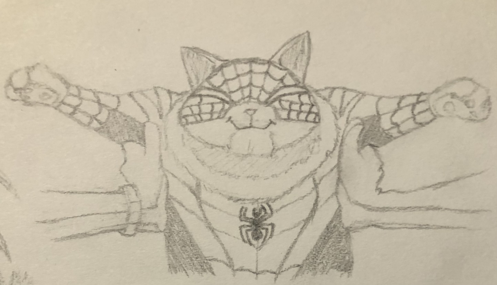
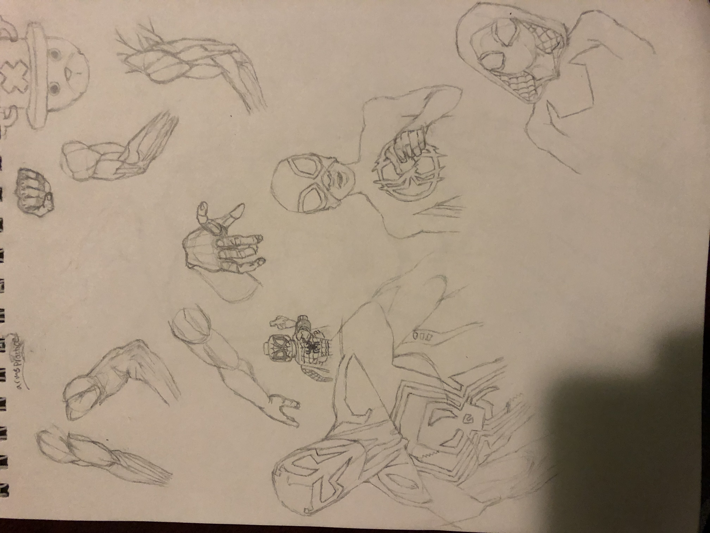
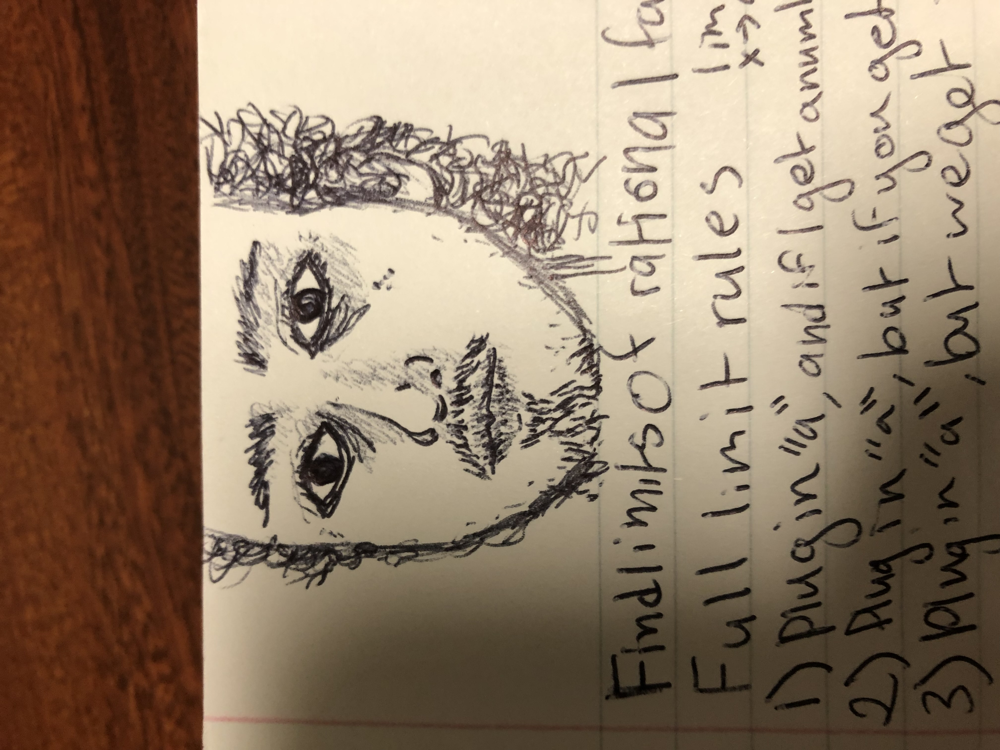

To me, Visual Arts is any kind of physical art thats made to be displayed.
I have to believe this because the variety of art I create is so vastly different which you'll see as you explore my page!
below will be just a taste of what I'm capable of, just some practices I did that I'm particularly proud of for one reason or another.

This was a cat from spiderman across the spiderverse that I drew.


Since I made all this art myself basically all of this was used in order to improve my skill.
There is a drawing of the statue of david by michealangelo, I did not put a leaf.
Who
About the Hobbyists
Information about hobbyists involved.
Prompt used for image generation: [prompt here]
When
Best Times for the Hobby
Details about the best times for indulging in the hobby.
AI Generated Image
Prompt used for image generation: [prompt here]
Where
Best Locations for the Hobby
Information about the ideal locations for pursuing the hobby.